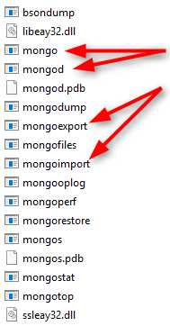

MongoDB
Document database
Szymon Sobocik
Plan
- What is MongoDB
- Simple operations
- Data models
- Indexes
- Replica Set
- Sharding
What is MongoDB?
- NoSQL Database
- No tabular constraints on your data schema
- Document Oriented
- Database is organized into Collections and Documents, not Tables and Rows
- Designed with Scalability in Mind
- Scales well Horizontally
How it's in SQL?
Let's assume we have a banking application.
- Persons
- Accounts
Person can have many Accounts and therefore Account has only one Person

Get a name for a Person with ID 1

Get accounts for Person with ID 1

Two separate queries. Could be slow on large datasets.
Who's the owner of account number 3?

Must do 'Join' on Account Holder ID
Which accounts are held by Adam Kowalski

Must do 'Join' on Account Holder ID
Issues?
- Data across many tables
- For one dashboard, requires several queries
- Might require computation power
How it's done in MongoDB
Documents and Collections
Document
- key-value pairs
- looks like JSON
- values of fields may include other documents, arrays, and arrays of documents
- in DB: Binary JSON --> BSON
{
"_id": "0",
"first_name": "Adam",
"last_name": "Kowalski",
"accounts": [
{
"id": 0,
"account_type": "Investment",
"account_balance": "80000.00",
"currency": "USD"
},
{
"id": 1,
"account_type": "Savings",
"account_balance": "70400.00",
"currency": "USD"
},
{
"id": 2,
"account_type": "Checking",
"account_balance": "4500.00",
"currency": "USD"
}
]
}
Collections
- Documents are stored in Collections
- Collections are analogous to tables in RDBMS
- Does not require a schema
Documents stored in a Collection must have a unique _id field that acts as a primary key
Usually it's a BSON ObjectId
{
"_id" : ObjectId("56a4acf432ba992db8fd174f"),
"Name" : "Adam",
"last_name" : "Kowalski"
},
{
"_id" : "Some unique String,
"first_name" : "Marek",
"last_name" : "Nowak"
}
Install MongoDB
C:\MongoDB\Server\3.2\bin\
mongod
Starts up the MongoDB server and indicates we can start inserting data.
Helper script in VM: 'start mongod.bat' on the Desktop
mongo
The MongoDB Interactive Shell
Similar to the javascript interactive shell except it includes a mongodb api
MongoDB structure
MongoDB Interactive Shell
- help
- db.help()
- show dbs
- use dbName
- show collections
To create a database with name 'training' simple type
'use training'
Database will be created when documents are inserted
Insert documents
Syntax
db.collection.insert({document object})
Example
db.persons.insert({ "name":"Marek", "age":"22" } )
Basic query operations
Find documents
db.persons.find()
db.persons.findOne()
Equality Conditions
{ field1: value1, field2.embedded: value2, ... }
Field can be a top level field, or embedded document.
Use dot (.) notation for embedded documents.
Query by a Top Level Field
db.persons.find({"first_name":"John"})
Query by a Field in an Embedded Document
db.persons.find({"address.street":"Bojkowska"})
Query by a Field in an Array
db.persons.find({"accounts.type":"Savings"})
Pretty print results of find
db.persons.find({"name":"Adam"}).pretty()
Results in a nicely formatted json on screen
Specify Conditions with Operators
Basic syntax
{ field1: { operator1: value1 } }
Greater Than Operator ($gt)
db.persons.find({"age":{$gt:30}})
Less Than Operator ($lt)
db.persons.find({"age":{$lt:18}})
$gte and $lte operators for inclusive comparison
(less than or equals)
Not Equals operator ($ne)
db.persons.find({"name":{$ne:"Adam"}})
//same as
db.persons.find({"name":{$not:{$eq:"Adam"}}})
Equals operator ($eq)
db.persons.find({"name":{$eq:"Adam"}})
//same as
db.persons.find({"name":"Adam"})
In operator ($in), matches for element in a list
db.persons.find({"name":{$in:["Adam", "Marek", "John"]}})
Not In operator ($nin)
db.persons.find({"name":{$nin:["Smith", "Adams"]}})
//same as
db.persons.find({"name":{$not:{$in:["Smith", "Adams"]}}})
Logical AND
db.persons.find({"first_name":"John","age":20})
Logical OR
db.persons.find({$or:[{"name":"Marek"},{"age":31}]})
Update documents
Syntax
//update one or many
db.persons.update({query object}, {update object}})
//update first document
db.persons.updateOne({query object}, {update object}})
//update more than one documents
db.persons.updateMany({query object}, {update object}})
Replace existing document etirely
db.accounts.update({"first_name":"Kathleen"},
{"first_name":"Johna", "last_name":"Smith"})
db.accounts.update({"first_name":"Kathleen"},
{"completely":"different document"})
Use update operators - modify specific fields
//change only specific fields
db.accounts.update({"first_name":"Kathleen"},{
$inc: {"books_read": 5}
$set:{
"first_name":"Johna",
"update_date": ISODate('2016-01-20')
},
$mul: {"salary": 2}
})
$inc - increment (decrement) field by givenvalue
$set - set a new value for a fields
$mul - multiplies field by a given value
Use update operators - remove a field
//unset given field
db.accounts.update({"first_name":"Kathleen"},{
$unset: {"is_manager": 1}
})
//change field name
db.accounts.update({"first_name":"Kathleen"},{
$rename: {"nickname": "alias"}
})
$unset - remove field from document
$rename - change filed name
Remove/Delete documents
Remove some documents by query
//remove all documents that match a condition
db.accounts.remove({"status":"officer"}});
//return WriteResult:
WriteResult({ "nRemoved" : numberOfRemovedDocuments })
//remove only one document
db.accounts.remove({"status":"officer"}, {justOne:true}});
//should return WriteResult object:
WriteResult({ "nRemoved" : 1 })
Remove all documents
//remove all documents from collection
db.accounts.remove({})
//drop a collection
db.accounts.drop()
Drop deletes entire collection, including the indexes. May be more efficient.
Count
//count all documents in collection
db.accounts.count()
db.accounts.find().count
//count documents with a query
db.accounts.find({"name":"John"}).count()
Exists
Check if document has a field
db.auta.find({"rok":{$exists:1}})
Tasks - Iteration 1
../mongo-training/tasks/task.01/task.01.mdCursor
db.collection.find() returns a cursor object to matching
documents
Cursor can be modified with limit, skip and sort orders
Cursor modifiers
Paging
limit() and skip()
db.accounts.find().limit(2)
db.accounts.find().skip(20)
db.accounts.find().limit(2).skip(10)
Ordering
sort()
//ascending
db.accounts.find().sort({"first_name":1})
//descending
db.accounts.find().sort({"first_name":-1})
//descending by age then ascending by first name
db.accounts.find().sort({"age":-1, "first_name":1})
By default MongoDB does not guarantee the order of query results
Sorting happens before limit and skip
Projections
Limit a data fetched form database
Use when only sub-set of fields is needed
Syntax
db.persons.find({query document}, {projection document})
//projection document:
{"field_name":1, "other_field": 1, "_id":0}
In this case we dont want _id field fetched
Example
db.persons.find({"department":"FP Academy"},
{"first_name":1, "last_name":1})
//will return only _id, first_name and last_name fields
//explicitly exlude _id field
db.persons.find({"department":"FP Academy"},
{"first_name":1, "last_name":1, _id:0})
//will return objects containing only first_name and last_name fields
//without _id field
mongoimport
Located in mongo install directory.
Used to import data from file (i.e. JSON array)
mongoimport --db databaseName --collection collectionName --file file.json
or
mongoimport --db databaseName --collection collectionName --jsonArray arrayFile.json
Use outside mongo shell. Directly from system console (cmd, bash)
Tasks - Iteration 2
Import, Query, Projections
../mongo-training/tasks/task.02/task.02.mdIndexes
Indexes
Without indexes, MongoDB must perform a collection scan, i.e. scan every document in a collection
Index types
- Single field
- Compound
- Multikey
- Geospatial
- Text
- Hashed
Single field index
db.friends.createIndex({"score": 1})
Compound indexes
db.friends.createIndex({ "userid": 1, "score": -1 })
Multikey indexes
db.friends.createIndex({"addr.zip": 1})
Other types of Indexes
Geospatial Indexes
Two surface types:
- Spherical
- Flat
Location data stored in GeoJSON objects
Text Indexes
- Text search of string content
- At most one
textindex
db.reviews.createIndex( { comments: "text" } )
Hashed Indexes
- Entries with hashes of the values of the indexed field
- Support sharding a collection
- Does not support multi-key (i.e. arrays) indexes
db.persons.createIndex( { surname: "hashed" } )
//creates a hashed index for the "persons" collection
//on the "surname" field
Index Properties
- Unique
- Partial
- Sparse
- TTL
Index Properties
Unique
Reject all documents that contain a duplicate value for the indexed field
db.members.createIndex( { "user_id": 1 }, { unique: true } )
Unique on Compound Index will enforce uniqueness on the combination of values
Partial Indexes
Only index the documents in a collection that meet a specified filter expression
db.restaurants.createIndex(
{ cuisine: 1, name: 1 },
{ partialFilterExpression: { rating: { $gt: 5 } } }
)
- Subset of the documents in a collection
- Lower storage requirements
- Reduced performance costs for index creation and maintenance
Sparse Indexes
Only contains entries for documents that have the indexed field
db.addresses.createIndex( { "xmpp_id": 1 }, { sparse: true } )
From MongoDB 3.2 Partial index is preffered
TTL Indexes
Special single-field indexes that MongoDB can use to automatically remove documents from a collection after a certain amount of time
db.eventlog.createIndex( { "lastModifiedDate": 1 },
{ expireAfterSeconds: 3600 } )
Create on a field whose value is either a date or an array that contains date values
Tasks - Iteration 4
Indexes
../mongo-training/tasks/task.04/task.04.mdTasks - Iteration 3
Modeling data in MongoDB
../mongo-training/tasks/task.03/task.03.mdReplica Set
Sharding
Summary
Advantages of MongoDB over RDBMS
- Schema less : MongoDB is document database in which one collection holds different documents. Number of fields, content and size of the document can be differ from one document to another.
- Structure of a single object is clear
- No complex joins
- Deep query-ability. MongoDB supports dynamic queries on documents using a document-based query language that's nearly as powerful as SQL
- Tuning
- Ease of scale-out: MongoDB is easy to scale
- Conversion / mapping of application objects to database objects not needed
- Uses internal memory for storing the (windowed) working set, enabling faster access of data
Why should use MongoDB
- Document Oriented Storage : Data is stored in the form of JSON style documents
- Index on any attribute
- Replication & High Availability
- Auto-Sharding
- Rich Queries
- Fast In-Place Updates
- Professional Support By MongoDB
Where should use MongoDB?
- Big Data
- Content Management and Delivery
- Mobile and Social Infrastructure
- User Data Management
- Data Hub
Document example
{
"_id" : ObjectId("54c955492b7c8eb21818bd09"),
"address" : {
"street" : "2 Avenue",
"zipcode" : "10075",
"building" : "1480",
"coord" : [ -73.9557413, 40.7720266 ],
},
"borough" : "Manhattan",
"cuisine" : "Italian",
"grades" : [
{
"date" : ISODate("2014-10-01T00:00:00Z"),
"grade" : "A",
"score" : 11
},
{
"date" : ISODate("2014-01-16T00:00:00Z"),
"grade" : "B",
"score" : 17
}
],
"name" : "Vella",
"restaurant_id" : "41704620"
}